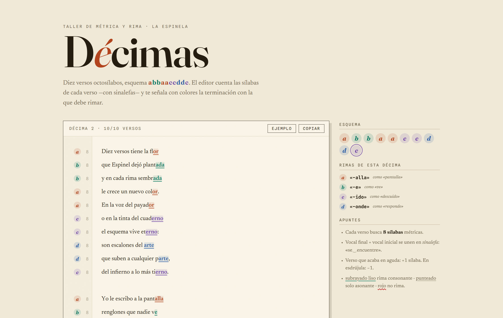
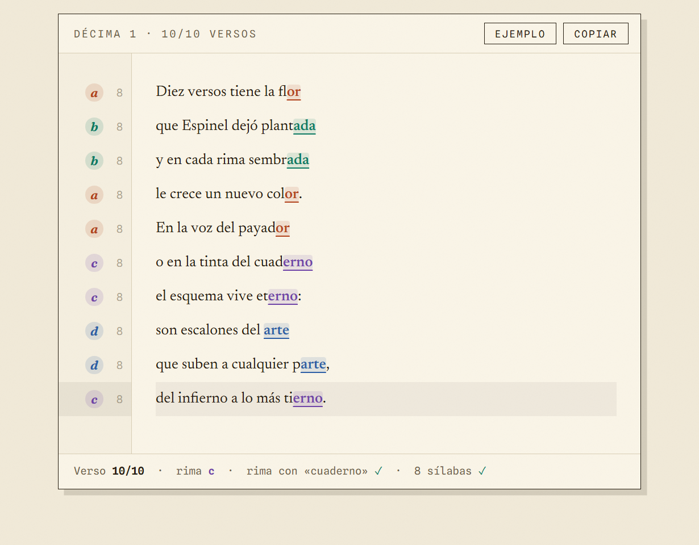
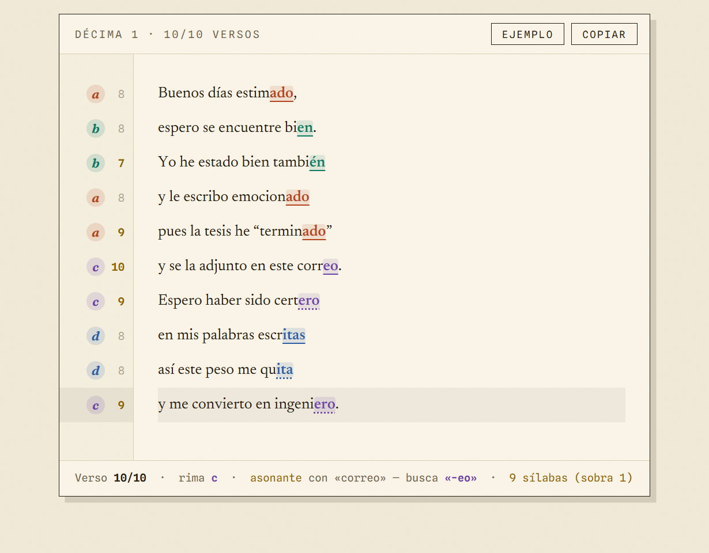
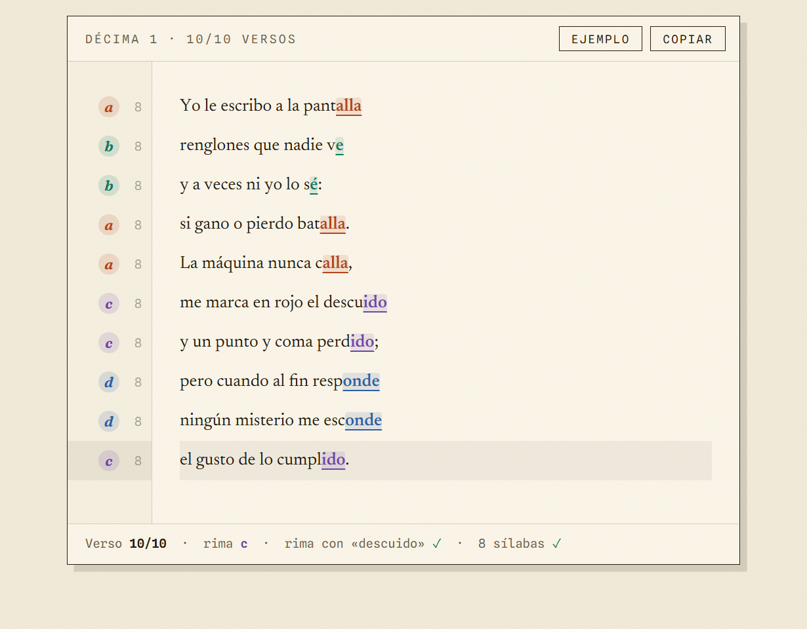

Editor de Décimas
A web editor for writing décimas — ten-verse Spanish stanzas with the espinela rhyme scheme (abbaaccddc). It color-codes each verse's rhyme group, highlights the ending it must rhyme with, and counts metric syllables in real time.




Overview
One prompt, one editor
The idea came after watching Jorge Drexler's famous talk about the décima. I got hooked trying to write my own and realized a normal text editor doesn't tell you which verse you're on, how many syllables you've written, or what each line must rhyme with. This one does: a Spanish syllabification engine handles diphthongs, hiatus, silent letters, and sinalefa between words, and rhyme keys account for seseo and yeísmo.
The project was built with Claude Fable 5 from literally a single prompt — the code, the metrics engine, its test suite, and ten example décimas composed and verified with the engine itself.
Color-coded rhyme
Each verse gets its scheme letter and the ending it must rhyme with, highlighted in its group's color
Metric syllables
Live count with sinalefa, +1 for oxytone endings, −1 for proparoxytones — flagged when a verse isn't 8
Built with Claude Fable 5
Vanilla HTML, CSS, and JavaScript — no dependencies, no build step, generated from one prompt
 Email
Email
 GitHub
GitHub
 LinkedIn
LinkedIn